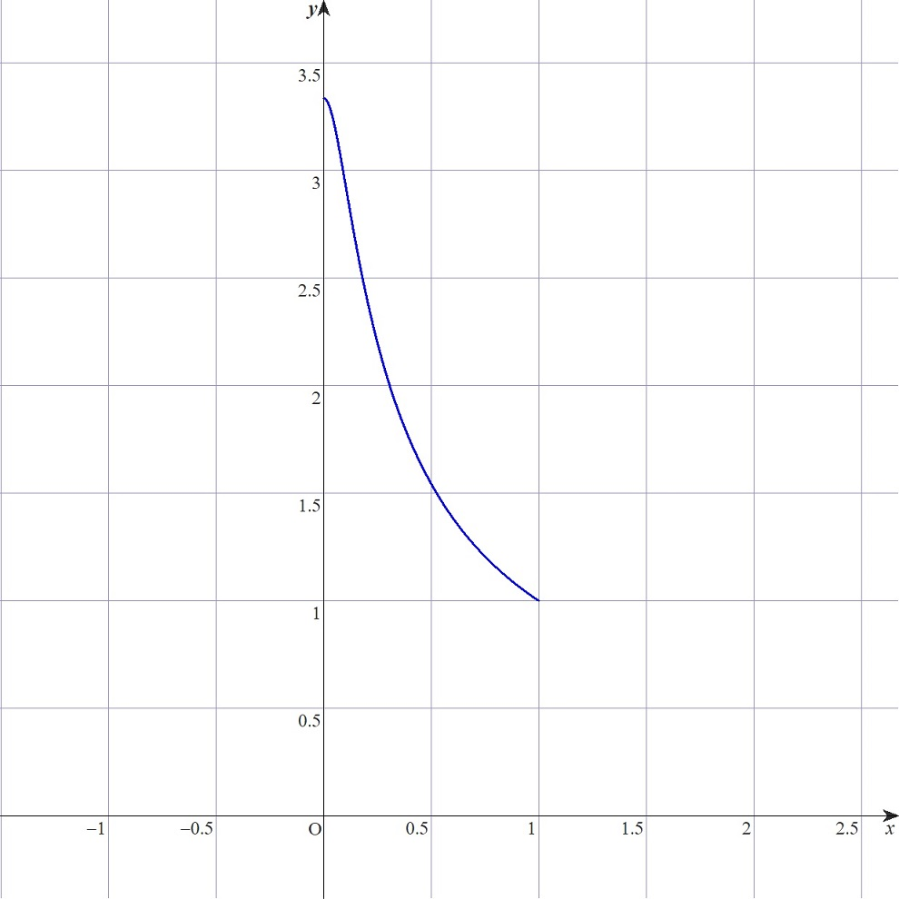
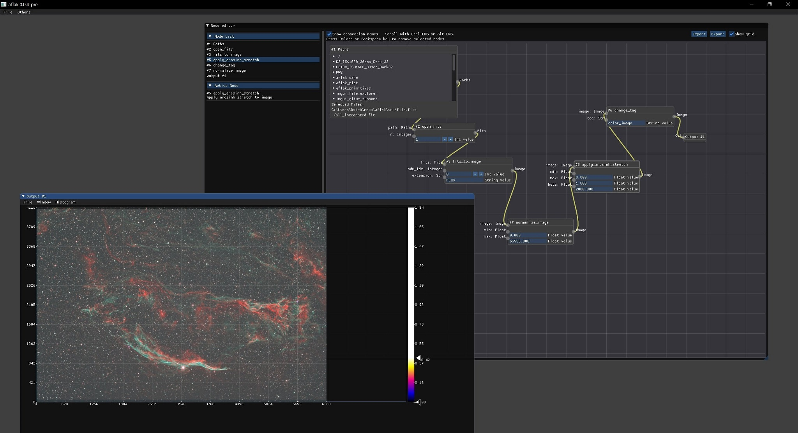

<!DOCTYPE html>
<html>

<head><meta name="generator" content="Hexo 3.8.0">
  <meta charset="utf-8">
  
    <title>
      
        ArcsinhStretch について調べて，追実装してみる | 
            ほしよみ大学生のブログ
    </title>
    <meta name="viewport" content="width=device-width">
    <meta name="description" content="あいさつ最近 PixInsight を導入して使い始めました．このソフトには ArcsinhStretch というストレッチ機能があり，結局どういうことをやっているのか少し気になったので調べてみました．">
<meta name="keywords" content="画像処理,Rust">
<meta property="og:type" content="article">
<meta property="og:title" content="ArcsinhStretch について調べて，追実装してみる">
<meta property="og:url" content="http://dabokun.github.io/2021/06/16/00000056-aflak-improc-03/index.html">
<meta property="og:site_name" content="ほしよみ大学生のブログ">
<meta property="og:description" content="あいさつ最近 PixInsight を導入して使い始めました．このソフトには ArcsinhStretch というストレッチ機能があり，結局どういうことをやっているのか少し気になったので調べてみました．">
<meta property="og:locale" content="ja">
<meta property="og:image" content="http://dabokun.github.io/2021/06/16/00000056-aflak-improc-03/card.jpg">
<meta property="og:updated_time" content="2021-06-17T12:06:25.475Z">
<meta name="twitter:card" content="summary_large_image">
<meta name="twitter:title" content="ArcsinhStretch について調べて，追実装してみる">
<meta name="twitter:description" content="あいさつ最近 PixInsight を導入して使い始めました．このソフトには ArcsinhStretch というストレッチ機能があり，結局どういうことをやっているのか少し気になったので調べてみました．">
<meta name="twitter:image" content="http://dabokun.github.io/2021/06/16/00000056-aflak-improc-03/card.jpg">
<meta name="twitter:creator" content="@dabo_pic">
      
        <link rel="alternative" href="/atom.xml" title="ほしよみ大学生のブログ" type="application/atom+xml">
        
          
            <link rel="icon" href="/images/favicon.png">
            
              <link rel="stylesheet" href="/css/style.css">
                <!--[if lt IE 9]><script src="//html5shiv.googlecode.com/svn/trunk/html5.js"></script><![endif]-->
                
                  <script data-ad-client="ca-pub-1350688970555904" async src="https://pagead2.googlesyndication.com/pagead/js/adsbygoogle.js"></script>
</head></html>
<body>
  <div id="container">
    <div class="mobile-nav-panel">
	<i class="icon-reorder icon-large"></i>
</div>
<header id="header">
	<h1 class="blog-title">
		<a href="/">ほしよみ大学生のブログ</a>
	</h1>
	<nav class="nav">
		<ul>
			<li><a href="/">Home</a></li><li><a href="/categories">Categories</a></li><li><a href="/tags">Tags</a></li><li><a href="/archives">Archives</a></li><li><a href="/about">About</a></li><li><a href="/work">Work</a></li>
			<li><a id="nav-search-btn" class="nav-icon" title="Search"></a></li>
			<li><a href="https://github.com/dabokun"></a>
			</li>
			<li><a href="https://twitter.com/dabo_pic"></a></li>
			<li><a href="/atom.xml" id="nav-rss-link" class="nav-icon" title="RSS Feed"></a>
			</li>
		</ul>
	</nav>
	<div id="search-form-wrap">
		<form action="//google.com/search" method="get" accept-charset="UTF-8" class="search-form"><input type="search" name="q" class="search-form-input" placeholder="Search"><button type="submit" class="search-form-submit">&#xF002;</button><input type="hidden" name="sitesearch" value="http://dabokun.github.io"></form>
	</div>
</header>
    <div id="main">
      <article id="post-00000056-aflak-improc-03" class="post">
	<footer class="entry-meta-header">
		<span class="meta-elements date">
			<a href="/2021/06/16/00000056-aflak-improc-03/" class="article-date">
  <time datetime="2021-06-16T07:57:40.000Z" itemprop="datePublished">2021-06-16</time>
</a>
		</span>
		<span class="meta-elements author">astr0dab0</span>
		<div class="commentscount">
			
			<a href="http://dabokun.github.io/2021/06/16/00000056-aflak-improc-03/#disqus_thread" class="article-comment-link">Comments</a>
			
		</div>
	</footer>
	
	<header class="entry-header">
		
  
    <h1 class="article-title entry-title" itemprop="name">
      ArcsinhStretch について調べて，追実装してみる
    </h1>
  

	</header>
	<div class="entry-content">
		
		
		<div id="toc" class="toc-article">
			<p class="toc-title">目次</p>
			<ol class="toc"><li class="toc-item toc-level-3"><a class="toc-link" href="#あいさつ"><span class="toc-number">1.</span> <span class="toc-text">あいさつ</span></a></li><li class="toc-item toc-level-3"><a class="toc-link" href="#「色を保つ」とは"><span class="toc-number">2.</span> <span class="toc-text">「色を保つ」とは</span></a></li><li class="toc-item toc-level-3"><a class="toc-link" href="#どう計算するか"><span class="toc-number">3.</span> <span class="toc-text">どう計算するか</span></a></li><li class="toc-item toc-level-3"><a class="toc-link" href="#実際に実装してみる"><span class="toc-number">4.</span> <span class="toc-text">実際に実装してみる</span></a></li></ol>
		</div>
		
		<script type="text/javascript" async src="https://cdn.mathjax.org/mathjax/latest/MathJax.js?config=TeX-MML-AM_CHTML"></script>

<h3 id="あいさつ"><a href="#あいさつ" class="headerlink" title="あいさつ"></a>あいさつ</h3><p>最近 PixInsight を導入して使い始めました．このソフトには ArcsinhStretch というストレッチ機能があり，結局どういうことをやっているのか少し気になったので調べてみました．</p>
<a id="more"></a>
<h3 id="「色を保つ」とは"><a href="#「色を保つ」とは" class="headerlink" title="「色を保つ」とは"></a>「色を保つ」とは</h3><p>よく ArcsinhStretch では色が保持されるといいます．これはどういうことでしょうか．<br>まずは普通の非線形なストレッチを考えてみましょう．普通は次のようなアルゴリズムでストレッチをします．<br>変換前を<script type="math/tex">r, g, b</script>，変換後を<script type="math/tex">R, G, B</script>とおきましょう．</p>
<script type="math/tex; mode=display">R = f(r),  G = f(g),  B = f(b)</script><script type="math/tex; mode=display">
f(x) = \begin{cases}
    0 & (x < m) \\
    \frac{F(x - m)}{F(M - m)} & (m \le x \le M) \\
    1 & (x > M)
  \end{cases}</script><p>関数<script type="math/tex">F</script>は通常<script type="math/tex">\log</script>や√，線形関数などがありますが，色が保持されるとは，変換後の<script type="math/tex">R, G, B</script>の比率が変換前の<script type="math/tex">r, g, b</script>と変わらないことを言います．<br>このことは，色相と彩度が変わらないということです．これらを式で見てみると，</p>
<script type="math/tex; mode=display">Max = \max(R, G, B), Min = \min(R, G, B)</script><script type="math/tex; mode=display">H = \begin{cases}
  60 * ((G - B) / (Max - Min)) ,\; \max(R, G, B) = R \\
  60 * ((B - R) / (Max - Min)) + 120 ,\; \max(R, G, B) = G \\
  60 * ((R - G) / (Max - Min)) + 240 ,\; \max(R, G, B) = B
    \end{cases}</script><script type="math/tex; mode=display">S = (Max - Min) / Max</script><p>であることから，たとえば，<script type="math/tex">R' = k \cdot R, G' = k \cdot G, B' = k \cdot B (k > 0)</script>であるような変換であれば，三色の値の大小関係も保たれ（最大値は<script type="math/tex">Max' = k \cdot Max</script>，最小値は<script type="math/tex">Min' = k \cdot Min</script>），色相と彩度が基本的に保たれる，つまり色が保たれるということになります．</p>
<script type="math/tex; mode=display">H: \frac{60 * (G' - B')}{Max' - Min'} = \frac{60 * (k \cdot G - k \cdot B)}{k \cdot Max - k \cdot Min} = \frac{60 * (G - B)}{Max - Min}</script><p>（上の式については他のケースについても同様）</p>
<script type="math/tex; mode=display">S: \frac{Max' - Min'}{Max'} = \frac{k \cdot Max - k \cdot Min}{k \cdot Max} = \frac{Max - Min}{Max}</script><p>この<script type="math/tex">k</script>（ストレッチファクターとも呼びます）を決めるときに，Arcsinh関数を使うことで，ArcsinhStretchが実現できます．したがって，（自分は勘違いしていたのですが）Arcsinh関数を使うことと色が保持されることは特に関係はありません．<br>どの画素に対しても同じ<script type="math/tex">k</script>を掛け算するようなストレッチ方法であれば，必ず色は保持されます．</p>
<blockquote>
<p>The key point is that to preserve color the calculated pixel multiplier must be simultaneously applied to all channels (R,G,B) in the pixel.<br><a href="https://pixinsight.com/doc/tools/ArcsinhStretch/ArcsinhStretch.html#__Possible_Future_Work__" target="_blank" rel="noopener">ArcsinhStretch</a>― by Mark Shelley</p>
</blockquote>
<h3 id="どう計算するか"><a href="#どう計算するか" class="headerlink" title="どう計算するか"></a>どう計算するか</h3><p>実際に<script type="math/tex">k</script>を決めるのは，次のような式で決めます．</p>
<script type="math/tex; mode=display">L = \mathrm{Luminance}(R, G, B)</script><script type="math/tex; mode=display">k = \frac{\mathrm{arcsinh}(\beta \cdot L)}{L \cdot \mathrm{arcsinh}(\beta)}</script><p>画素ごとにストレッチファクターを一意に決めるため，輝度の値を使っています．前述したように，上の式の Arcsinh 関数は，別に他の関数でも問題ありません．実際，PixInsight でも他の関数でもできるようにしたいという Future Work が書かれています．<br>輝度―<script type="math/tex">k</script>のグラフを書くと，こんな感じの概形になります．<br><br>上では<script type="math/tex">\beta = 10</script>としてみました．この値が大きくなればなるほど，<script type="math/tex">x = 0</script>での値も大きくなるように変化します．この値は<script type="math/tex">\frac{\beta}{\mathrm{arcsinh}(\beta)}</script>となるようです．<br>暗い画素ほどより大きい値で，明るい画素ほど<script type="math/tex">1</script>に近い値でスケーリングされます．これにより，明るい星まわりの階調をなるべく保存しつつ，暗い部分を持ち上げていることになりますね．<br>直観的な操作を提供するため，PixInsight では0から1000までの値で<script type="math/tex">k</script>の最大値（上のグラフで言うところの<script type="math/tex">x = 0</script>での値だと思われます）をユーザ入力としています．</p>
<h3 id="実際に実装してみる"><a href="#実際に実装してみる" class="headerlink" title="実際に実装してみる"></a>実際に実装してみる</h3><p>上の<script type="math/tex">k</script>を決める式を<script type="math/tex">\beta</script>について解く方法は少なくとも僕にはわかりませんでしたので，とりあえず<script type="math/tex">\beta</script>をユーザ入力とするような ArcsinhStretch を実装してみたいと思います．<br>コードはこんな感じ…．</p>
<figure class="highlight rust"><table><tr><td class="gutter"><pre><span class="line">1</span><br><span class="line">2</span><br><span class="line">3</span><br><span class="line">4</span><br><span class="line">5</span><br><span class="line">6</span><br><span class="line">7</span><br><span class="line">8</span><br><span class="line">9</span><br><span class="line">10</span><br><span class="line">11</span><br><span class="line">12</span><br><span class="line">13</span><br><span class="line">14</span><br><span class="line">15</span><br><span class="line">16</span><br><span class="line">17</span><br><span class="line">18</span><br><span class="line">19</span><br><span class="line">20</span><br><span class="line">21</span><br><span class="line">22</span><br><span class="line">23</span><br><span class="line">24</span><br><span class="line">25</span><br><span class="line">26</span><br><span class="line">27</span><br><span class="line">28</span><br></pre></td><td class="code"><pre><span class="line"><span class="keyword">extern</span> <span class="keyword">crate</span> libm;</span><br><span class="line"><span class="comment">/*省略*/</span></span><br><span class="line"><span class="function"><span class="keyword">fn</span> <span class="title">run_apply_arcsinh_stretch</span></span>(</span><br><span class="line">    image: &amp;WcsArray,</span><br><span class="line">    beta: <span class="built_in">f32</span>,</span><br><span class="line">) -&gt; <span class="built_in">Result</span>&lt;IOValue, IOErr&gt; &#123;</span><br><span class="line">    dim_is!(image, <span class="number">3</span>)?;</span><br><span class="line">    <span class="keyword">let</span> image = image.scalar();</span><br><span class="line">    <span class="keyword">let</span> <span class="keyword">mut</span> out = image.clone();</span><br><span class="line">    <span class="keyword">for</span> (j, slice) <span class="keyword">in</span> image.axis_iter(Axis(<span class="number">1</span>)).enumerate() &#123;</span><br><span class="line">        <span class="keyword">for</span> (i, data) <span class="keyword">in</span> slice.axis_iter(Axis(<span class="number">1</span>)).enumerate() &#123;</span><br><span class="line">            <span class="comment">//R, G, B値は予め正規化されているものとする</span></span><br><span class="line">            <span class="comment">//画素の輝度値を求める．0の基準がおかしいので各画素に0.5を加算して[0, 1]になるように調整．要修正．</span></span><br><span class="line">            <span class="keyword">let</span> l = (data[<span class="number">0</span>] + data[<span class="number">1</span>] + data[<span class="number">2</span>] + <span class="number">1.5</span>) / <span class="number">3.0</span>;</span><br><span class="line">            <span class="comment">//画素のk（ストレッチファクター）の値を決める</span></span><br><span class="line">            <span class="keyword">let</span> s_fact = libm::asinh((l * beta) <span class="keyword">as</span> <span class="built_in">f64</span>) / (l <span class="keyword">as</span> <span class="built_in">f64</span> * libm::asinh(beta <span class="keyword">as</span> <span class="built_in">f64</span>));</span><br><span class="line">            <span class="keyword">let</span> s_fact = s_fact <span class="keyword">as</span> <span class="built_in">f32</span>;</span><br><span class="line">            </span><br><span class="line">            out[[<span class="number">0</span>, j, i]] = s_fact * (data[<span class="number">0</span>] + <span class="number">0.5</span>);</span><br><span class="line">            out[[<span class="number">1</span>, j, i]] = s_fact * (data[<span class="number">1</span>] + <span class="number">0.5</span>);</span><br><span class="line">            out[[<span class="number">2</span>, j, i]] = s_fact * (data[<span class="number">2</span>] + <span class="number">0.5</span>);</span><br><span class="line">        &#125;</span><br><span class="line">    &#125;</span><br><span class="line">    <span class="literal">Ok</span>(IOValue::Image(WcsArray::from_array(Dimensioned::new(</span><br><span class="line">        out,</span><br><span class="line">        Unit::<span class="literal">None</span>,</span><br><span class="line">    ))))</span><br><span class="line">&#125;</span><br></pre></td></tr></table></figure>
<p>それっぽく持ち上がっています．</p>
<p>いかがでしたでしょうか？まとめると</p>
<ul>
<li>色を保つような変換の一つとして，画素の各RGBを同じ値だけ定数倍するような変換がある．この値は画素ごとに違う分には当然問題ない．</li>
<li>この定数として輝度の Arcsinh（をスケーリングしたもの）を利用すると，ArcsinhStretch を実現できる．</li>
<li>必ずしも Arcsinh を利用しなければ色を保てないわけではない．logやsqrtを利用しても何か面白い結果が得られるかも．</li>
</ul>
<p>ということがわかりました．arcsinh 以外の関数でストレッチした場合にどうなるかも見ていきたいと思いますが，今回のところはこれまで．<br>それでは．</p>

		
	</div>
	<footer class="article-footer">
		<a href="https://twitter.com/intent/tweet?text=ArcsinhStretch%20%E3%81%AB%E3%81%A4%E3%81%84%E3%81%A6%E8%AA%BF%E3%81%B9%E3%81%A6%EF%BC%8C%E8%BF%BD%E5%AE%9F%E8%A3%85%E3%81%97%E3%81%A6%E3%81%BF%E3%82%8B｜%E3%81%BB%E3%81%97%E3%82%88%E3%81%BF%E5%A4%A7%E5%AD%A6%E7%94%9F%E3%81%AE%E3%83%96%E3%83%AD%E3%82%B0&url=http://dabokun.github.io/2021/06/16/00000056-aflak-improc-03/" class="twitter-share-button" target="_blank" title="Twitter"></a>
		<script async src="https://platform.twitter.com/widgets.js" charset="utf-8"></script>

		<div id="fb-root"></div>
		<script async defer crossorigin="anonymous" src="https://connect.facebook.net/ja_JP/sdk.js#xfbml=1&version=v4.0"></script>
		<div class="fb-share-button" data-href="http://dabokun.github.io/2021/06/16/00000056-aflak-improc-03/" data-layout="button_count" data-size="small"><a target="_blank" href="https://www.facebook.com/sharer/sharer.php?u=https%3A%2F%2Fdabokun.github.io%2F&amp;src=sdkpreparse" class="fb-xfbml-parse-ignore">シェア</a></div>
	</footer>
	<footer class="entry-footer">
		<div class="entry-meta-footer">
			<span class="category">
				
  <div class="article-category">
    <a class="article-category-link" href="/categories/processing/">画像処理</a>
  </div>

			</span>
			<span class=" tags">
				
  <ul class="article-tag-list"><li class="article-tag-list-item"><a class="article-tag-list-link" href="/tags/rust/">Rust</a></li><li class="article-tag-list-item"><a class="article-tag-list-link" href="/tags/processing/">画像処理</a></li></ul>

			</span>
		</div>
	</footer>
	
	
<nav id="article-nav">
  
    <a href="/2999/12/31/99999999-notice/" id="article-nav-newer" class="article-nav-link-wrap">
      <strong class="article-nav-caption">Newer</strong>
      <div class="article-nav-title">
        
          お知らせ
        
      </div>
    </a>
  
  
    <a href="/2021/06/11/00000055-2021-06-amagi/" id="article-nav-older" class="article-nav-link-wrap">
      <strong class="article-nav-caption">Older</strong>
      <div class="article-nav-title">
        
          【遠征記】2021年6月 天城（L-eXtreme デビュー）
        
      </div>
    </a>
  
</nav>

	
</article>


<section id="comments">
	<div id="disqus_thread">
		<noscript>Please enable JavaScript to view the <a href="//disqus.com/?ref_noscript">comments powered by
				Disqus.</a></noscript>
	</div>
</section>

    </div>
    <div class="mb-search">
  <form action="//google.com/search" method="get" accept-charset="utf-8">
    <input type="search" name="q" results="0" placeholder="Search">
    <input type="hidden" name="q" value="site:dabokun.github.io">
  </form>
</div>
<footer id="footer">
	<h1 class="footer-blog-title">
		<a href="/">ほしよみ大学生のブログ</a>
	</h1>
	<span class="copyright">
		&copy; 2021 astr0dab0<br>
		Modify from <a href="http://sanographix.github.io/tumblr/apollo/" target="_blank">Apollo</a> theme, designed by <a href="http://www.sanographix.net/" target="_blank">SANOGRAPHIX.NET</a><br>
		Powered by <a href="http://hexo.io/" target="_blank">Hexo</a>
	</span>
</footer>
    
<script>
  var disqus_shortname = 'astr0dab0';
  
  var disqus_url = 'http://dabokun.github.io/2021/06/16/00000056-aflak-improc-03/';
  
  (function(){
    var dsq = document.createElement('script');
    dsq.type = 'text/javascript';
    dsq.async = true;
    dsq.src = '//go.disqus.com/embed.js';
    (document.getElementsByTagName('head')[0] || document.getElementsByTagName('body')[0]).appendChild(dsq);
  })();
</script>


<script src="//ajax.googleapis.com/ajax/libs/jquery/2.0.3/jquery.min.js"></script>


<link rel="stylesheet" href="/fancybox/jquery.fancybox.css" media="screen" type="text/css">
<script src="/fancybox/jquery.fancybox.pack.js"></script>


<script src="/js/script.js"></script>
  </div>
</body>
</html>